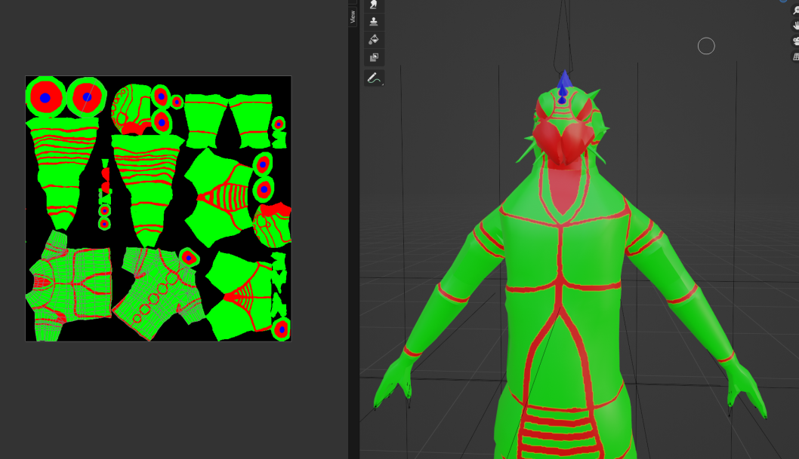
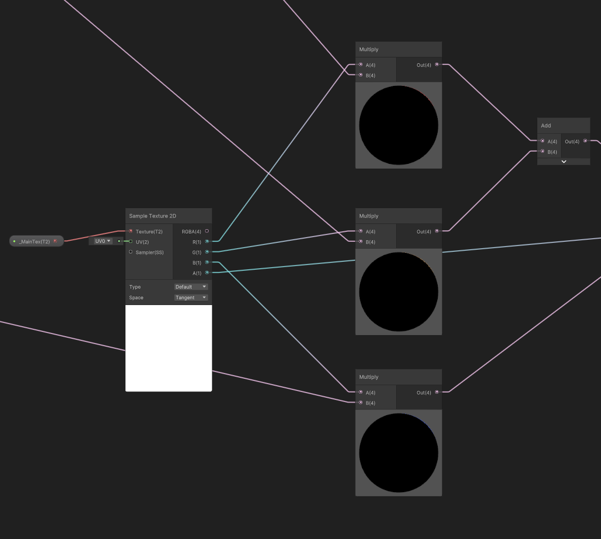
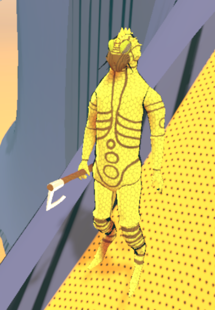
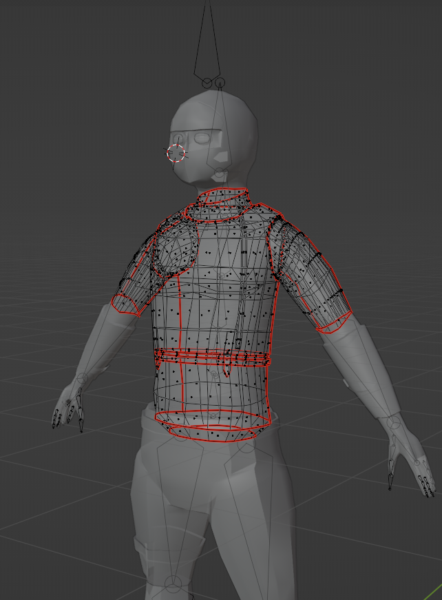
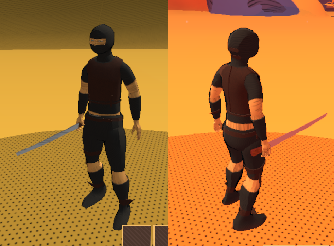
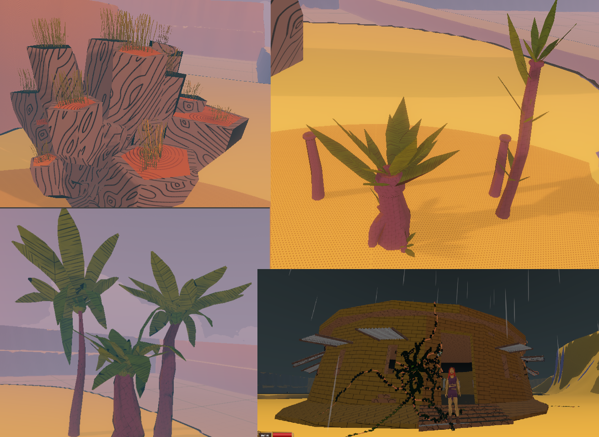
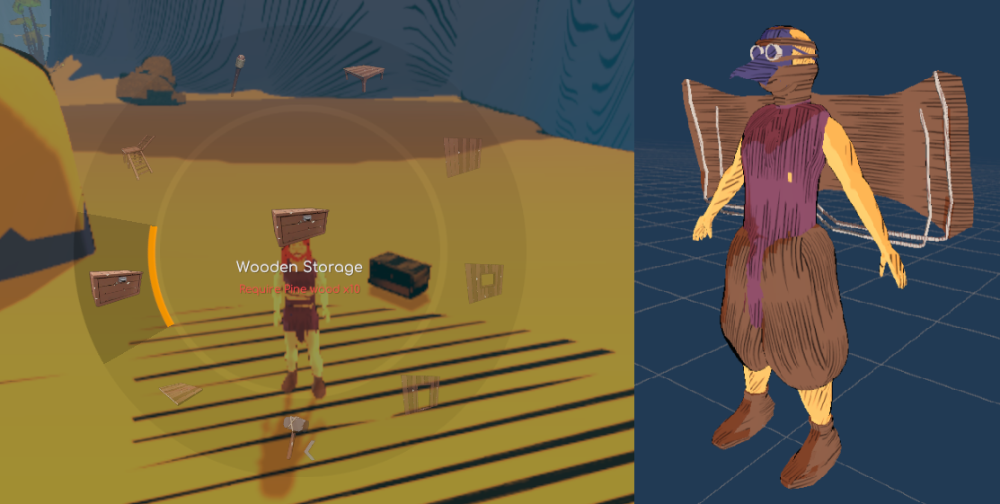

Proč ti to zase tak trvalo?
Ahoj. Nesplnil jsem slib a nepsal častěji. Pravda je, že dlouho nebylo moc co ukazovat. Ne proto, že bych na hře nepracoval každý den, ale protože jsem musel předělat spoustu věcí a nechtěl jsem sdílet polotovary. Každopádně dneska toho bude hodně.
Předělané shadery
Když člověk dělá dlouho na jednom projektu, často trochu oslepne vůči vlastním chybám. Když jsem ukázal vizuál kamarádům, zjistil jsem, že to nefunguje tak dobře, jak jsem si myslel. Po analýze jsem došel k tomu, že je potřeba to celé posunout.
Předělal jsem tedy shadery od základu. Nově používám sofistikovanější RGB masking shader. Vizuálně navazuje na předchozí směr, ale umožňuje přidávat víc vlastností a zároveň šetří výkon, protože místo tří shaderů zvládneme hodně věcí jedním.

Na obrázku je vidět, jak tři barevné kanály maskují plochy, na které se pak shader aplikuje. V Unity se to dá řešit přes texture sample a následné násobení předdefinovanými barvami, texturami nebo materiálovými vlastnostmi. Celý shader ukazovat nebudu, protože je už dost komplexní a navíc obsahuje vlastní úpravy v kódu. Ale jako základní princip to snad pomůže.

A tady je výsledný vzhled reptiloidně-hmyzí rasy. Ještě nemá jméno, takže pokud tě něco napadne, klidně napiš na Discord.

Předělané modely
Jak asi čekáš, musel jsem předělat i modely postav a velkou část světa. Nový shader totiž nepomáhá jen vizuálně, ale i výkonově. Každý materiál na modelu totiž v praxi znamená další výpočty světel a stínů. Když má postava tři materiály, hra to řeší třikrát.
Podobný problém je u skinned meshes. Tehdy jsem netušil, že každá skinned mesh může v Unity znamenat vlastní animator. Pokud tedy postava obsahuje deset oddělených částí, je to problém. A v populovaném open world RPG ještě větší. Za tenhle tip musím poděkovat Aleši Harrymu Herinkovi, který mi tím nejspíš zachránil hru.
To ale nebylo všechno. Po několika pokusech jsem došel i k tomu, že moje modely prostě nebyly dost dobré. Nejenže nevypadaly ideálně, ale byly i špatně optimalizované. Míval jsem kolem 30k vertexů na jednu část těla, třeba na ruku. To dělalo i 150 až 200k vertexů na celou postavu, což je pro open world nesmysl. Musel jsem to výrazně seříznout.
Na Harryho streamu jsem rychle pochytal další Blender postupy a přešel na ruční remeshování přes shrink wrap. Není to rychlé, ale je to zatím nejefektivnější řešení. Zkoušel jsem i automatické remeshery, ale ruční práce vyhrála. Současně jsem víc řešil i UV wrapping kvůli budoucím změnám kolem RGB maskingu.

Na obrázku je i přibližně vidět, jak jsem tělo rozřezal na jednotlivé části.
Body Culling
Rozdělení těla na části je užitečné i kvůli equipu. Dřív mi vadilo, že vybavení neschovávalo tělo správně. Teď jednotlivé kusy zbroje sedí na rozměry konkrétních body partů a můžu je při zakrytí jednoduše vypínat.

Nové přírodní modely
Tady je pár kreativnějších novinek. Jména si ještě nejsem jistý. Aktuálně mám víc než 10 druhů stromů. Nechci je ukazovat všechny, protože ještě nevím, které ve hře zůstanou, a stejně je budu znovu remeshovat. Na posledním obrázku je i prototyp architektury inspirovaný stavbami z Kenshi. Možná ho ale taky časem předělám, protože jsem konečně napojil building systém.

Building a létání?
A to nejlepší nakonec? Možná. Do hry jsem napojil asset pro building systém, takže půjde volně stavět a ukládat hráčské domy, craft stanice, bedny i další interaktivní předměty. Na obrázku je vidět i radiální menu, které ještě projde redesignem.
Je tam také létací oblek pro nomádské postavy. Při vývoji je super zábavný, ale zároveň dost rozbitý a zatím si nejsem jistý, jestli má smysl ho ve hře nechat. Co naopak smysl dává, jsou mounti nebo vozidla. Létání totiž rozbíjí některé systémy, které mám naplánované, třeba maskování okrajů světa. Klouzání by bylo ideální, ale na to mi tehdejší skillset ještě nestačil. Tak třeba někdy později.

To je vše
Bylo to dlouhé a je dost možné, že i plné chyb. Je jedna ráno a kašlu na to. Sleduj moje sítě, pokud chceš další informace o vývoji hry.